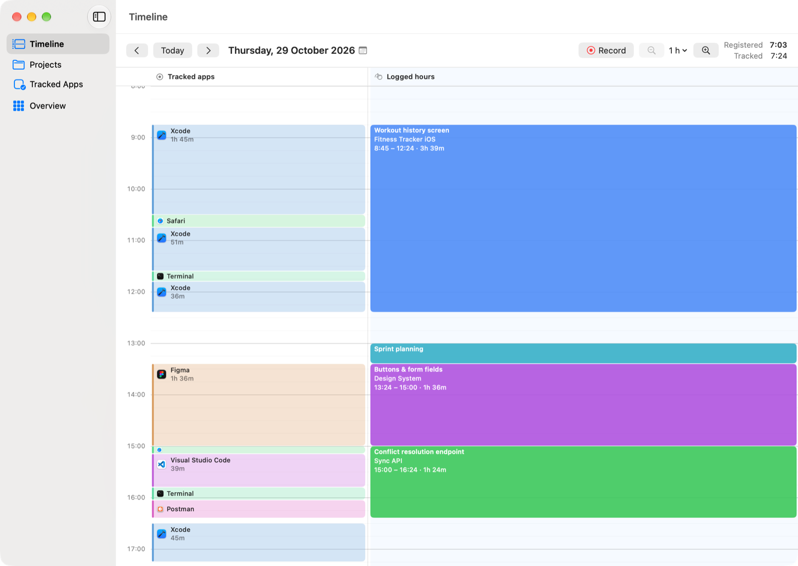
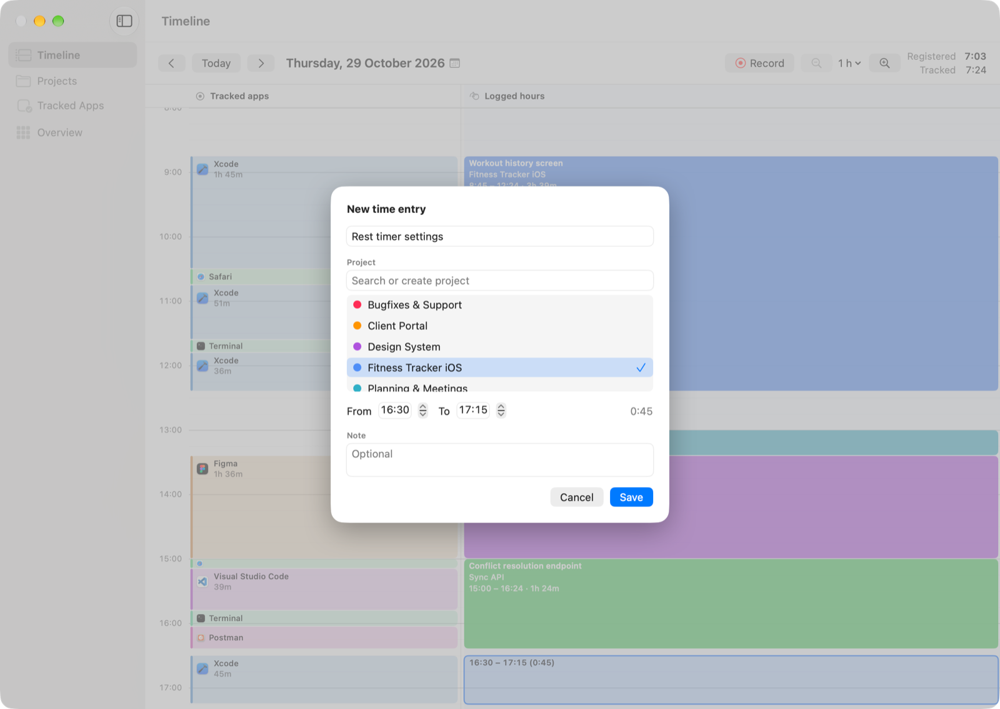
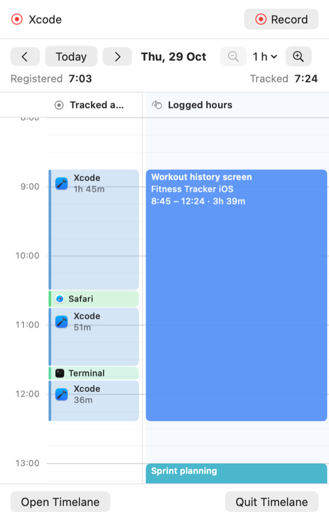
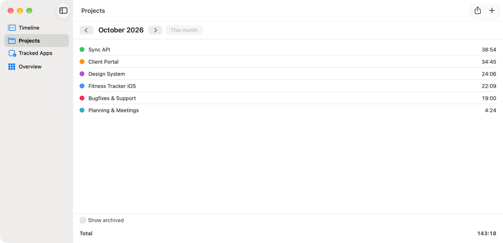
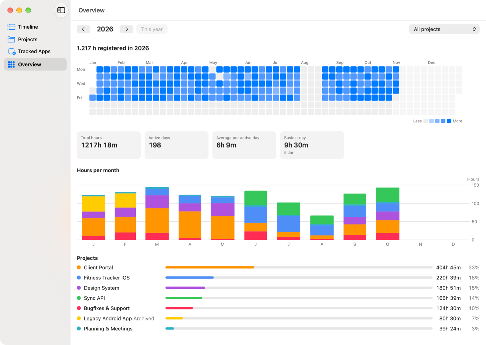
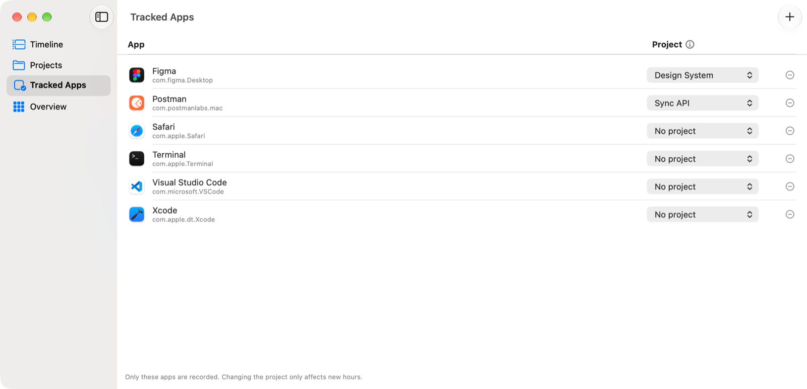
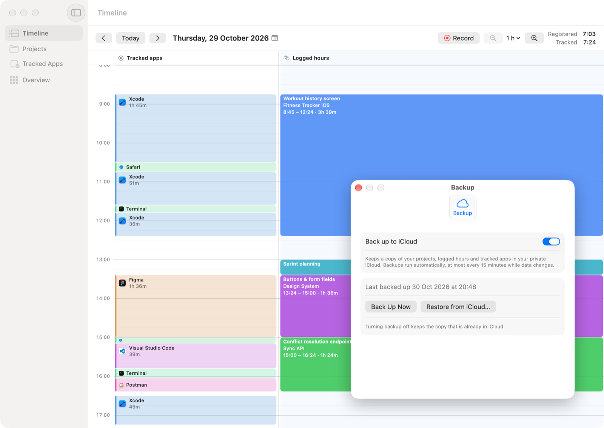

Log your hours in seconds
Drag across the timeline or click an app session, pick a project, done. Made a mistake? Undo it.
Log work hours per project
See where your working day went. Choose the apps you work in and Timelane shows them on a timeline, so logging hours per project takes seconds, not guesswork.

For macOS 26 or later


Drag across the timeline or click an app session, pick a project, done. Made a mistake? Undo it.

Live tracking status, the same timeline and a Record / Stop timer, without opening the window.

Every project with its hours per month. Export a month as a spreadsheet (.xlsx) or JSON for invoices and timesheets.

A heatmap of every day you worked, monthly charts and totals per project.

Only the apps on your list are recorded. Link an app to a project and its hours log themselves.

An optional backup of your data in your own iCloud. Off by default.
Nothing else is recorded.
All data is stored locally. No account.
No analytics, no ads.